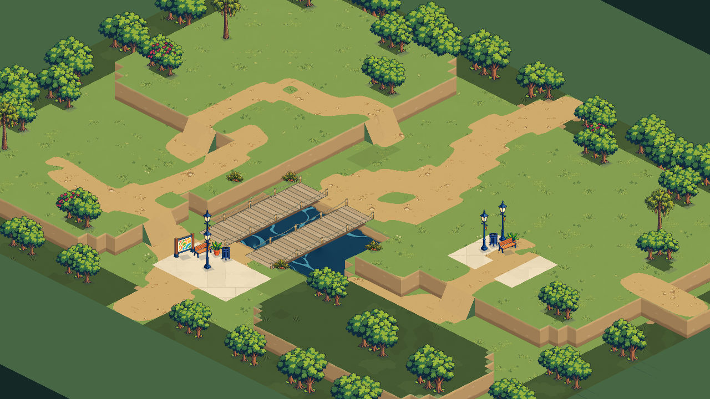
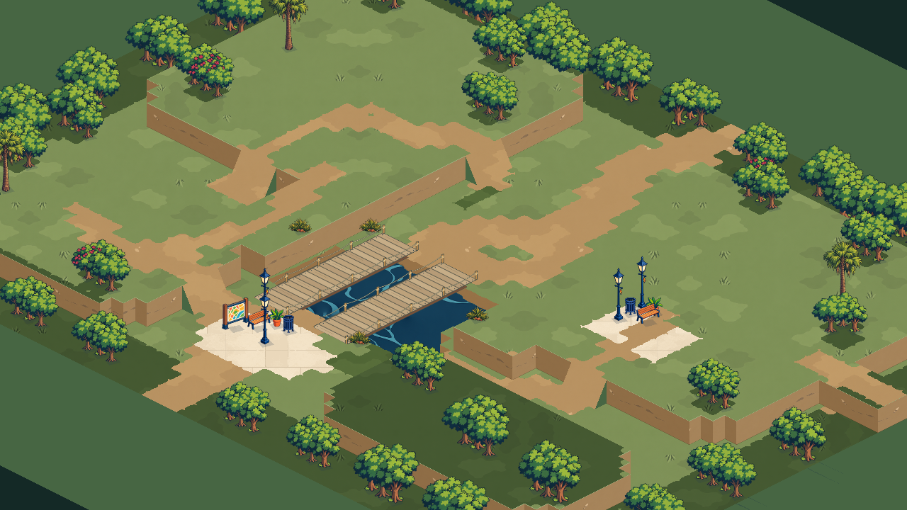
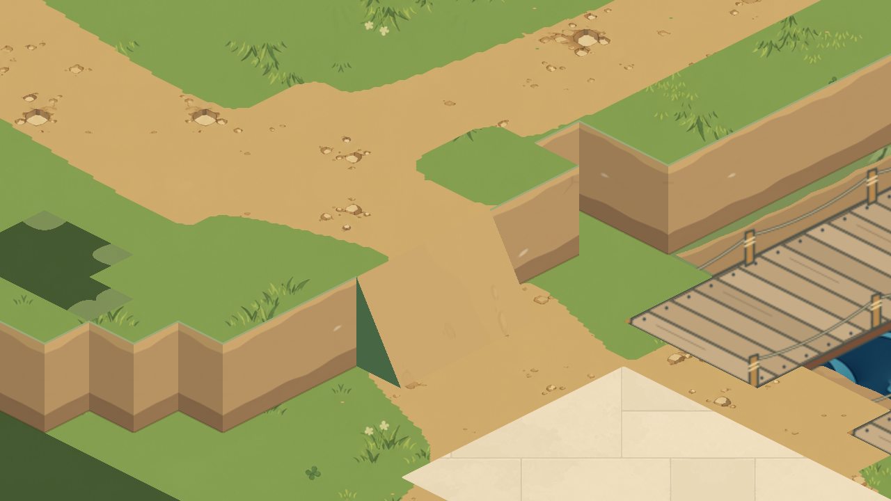
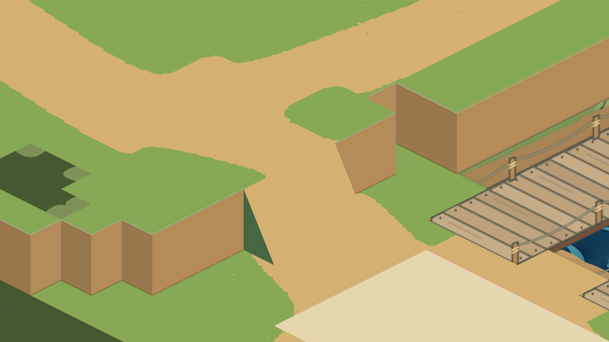
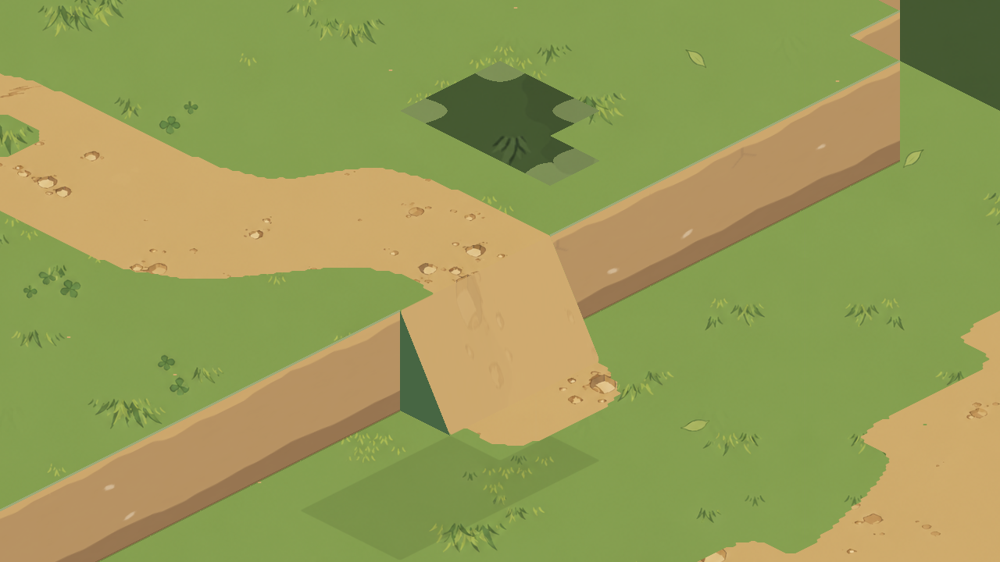
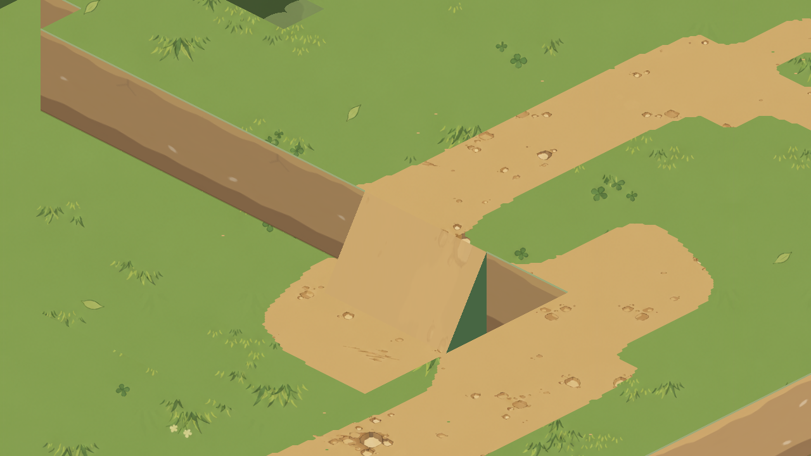
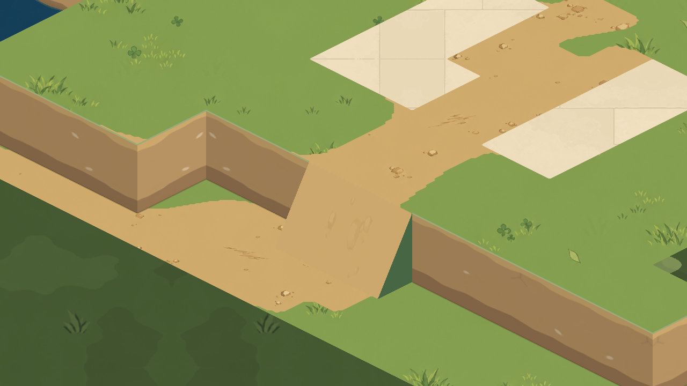
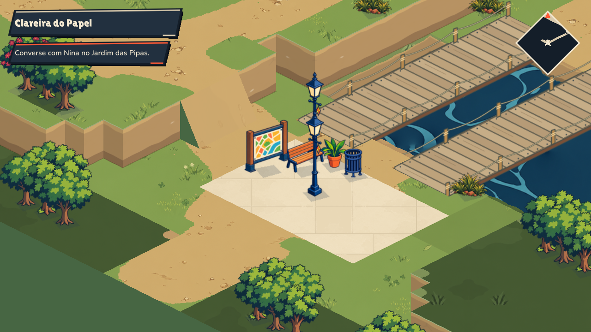

SOULMONSTERS · PILOTO LOCAL · REVISÃO 5
O solo também aparece nas laterais.
Grama, caminhos, barrancos e margens aplicados às 64×48 células da área. A campanha usa estes materiais; as revisões anteriores continuam disponíveis. Arraste o controle para comparar a vista geral.


ANTESREVISÃO 5Encontros com rampa e ponte
Captura ampliada para conferir o fechamento das laterais junto à rampa e às cabeceiras das pontes.

A rampa sem textura
Diagnóstico da superfÃcie inclinada e dos encontros com os patamares. A geometria das faces e a cota da água continuam iguais; o diagnóstico desativa a nova pintura. Fora do piloto, as curvas antigas permanecem visÃveis.

As outras rampas



No fluxo da campanha
